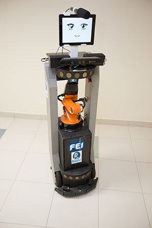

Team Members
Faculty:
PhD Students:
- Andrey A. Masiero, working on Human-Robot Interaction focus on Social Behavior and Service Robots.
MSc Students:
Undergrad Students:
- Leonardo Contador, working on object recognition.
- Lucas Matos Vasconcelos, working on navigation planning.
- Marina Yukari, designing and building robot's arms and head.
Past Students:
- Douglas de Rizzo Meneghetti, worked on object recognition.
- Edson Oliveira Junior, designed and built robot arm support.
- Gabriel Doretto, worked on speech recognition.
- Italo Fernandes, worked on speech recognition.
Robot:
- Judith, Peoplebot based robot.

All RoboFEI teams to celebrate @Home 3rd place on LARC/CBR 2015 at Uberlândia, Minas Gerais, Brazil.